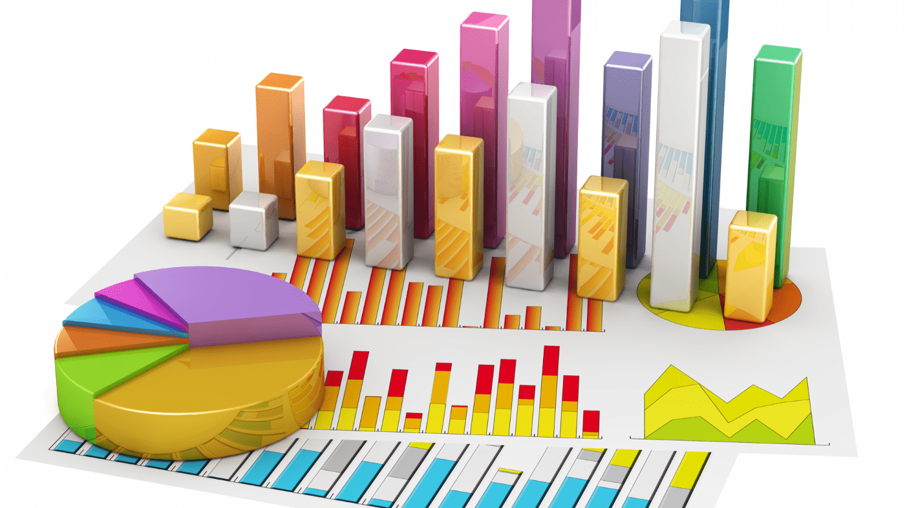

Homework 7
Online Mean & Variance — Simple Recurrences, Robust Algorithms
Security Simulator (HMWK 1)
This simulator runs a "random walk" to model a server's security score over time, based on attacker threats.
Simulation Parameters
Modify the values below and then click "Run" to see how the charts change.


Chart 1: Single Walk Trajectory
Shows the path (score vs. week) of a single random simulation.
Chart 2: Histogram of Final Scores
Shows the distribution of all final scores (the convergence to binomial).
Click the "Run Simulation" button to see the results.